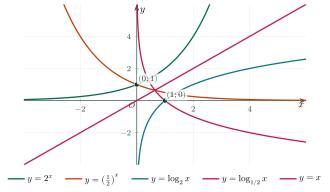

Exponential and Logarithmic FunctionsHàm số mũ và hàm số lôgarit
Grade 11 · Topic: Exponential and Logarithmic FunctionsLớp 11 · Chủ đề: Hàm số mũ và hàm số lôgarit
1Lesson IntroductionGiới thiệu bài học
Learning goalsMục tiêu bài học
By the end of this lesson you can:
Sau bài học này, em có thể:
recognise exponential and logarithmic functions and their key features;
nhận biết hàm số mũ, hàm số lôgarit và các đặc trưng cơ bản;
find domains, decide monotonicity and sketch the graphs;
tìm tập xác định, xét tính đơn điệu và vẽ đồ thị;
compare numbers using monotonicity;
so sánh các số dựa vào tính đơn điệu;
model growth and decay with exponential and logarithmic functions.
mô hình hóa bài toán tăng trưởng / suy giảm theo hàm mũ.
2Mathematical VocabularyTừ vựng Toán học
exponential function – \(y=a^x\) (\(a\gt0\), \(a\ne1\)); domain \(\mathbb R\), range \((0;+\infty)\).
hàm số mũ – \(y=a^x\) (\(a\gt0\), \(a\ne1\)); tập xác định \(\mathbb R\), tập giá trị \((0;+\infty)\).
logarithmic function – \(y=\log_a x\) (\(a\gt0\), \(a\ne1\)); domain \((0;+\infty)\), range \(\mathbb R\).
hàm số lôgarit – \(y=\log_a x\) (\(a\gt0\), \(a\ne1\)); tập xác định \((0;+\infty)\), tập giá trị \(\mathbb R\).
horizontal / vertical asymptote – \(y=a^x\) approaches the line \(y=0\); \(y=\log_a x\) approaches the line \(x=0\).
tiệm cận ngang / tiệm cận đứng (đồ thị mũ, lôgarit) – đồ thị \(y=a^x\) tiến sát đường \(y=0\); đồ thị \(y=\log_a x\) tiến sát đường \(x=0\).
exponential growth / decay – a quantity multiplied by the same factor in equal time steps: \(N=N_0a^{t}\).
tăng trưởng / suy giảm theo hàm mũ – đại lượng được nhân với cùng một hệ số sau mỗi khoảng thời gian bằng nhau: \(N=N_0a^{t}\).
3Useful English PhrasesCụm từ tiếng Anh thường gặp
The base is greater than one, so the function is increasing.
Cơ số lớn hơn 1 nên hàm số đồng biến.
The graph always passes through the point zero, one.
Đồ thị luôn đi qua điểm \((0;1)\).
The domain is the positive real numbers.
Tập xác định là \((0;+\infty)\).
The two graphs are symmetric about the line \(y=x\).
Hai đồ thị đối xứng nhau qua đường thẳng \(y=x\).
The population doubles every twenty minutes.
Số lượng tăng gấp đôi sau mỗi 20 phút.
4Prerequisite ReviewÔn tập kiến thức nền
From Bài 18–19: \(a^x\) is defined for every real \(x\) when \(a\gt0\); \(\log_a x\) needs \(x\gt0\); \(\log_a a^x=x\), \(a^{\log_a x}=x\). Comparing powers: for \(a\gt1\) a larger exponent gives a larger power.
Từ Bài 18–19: \(a^x\) xác định với mọi \(x\) khi \(a\gt0\); \(\log_a x\) cần \(x\gt0\); \(\log_a a^x=x\), \(a^{\log_a x}=x\). So sánh lũy thừa: với \(a\gt1\), số mũ lớn hơn thì lũy thừa lớn hơn.
5TheoryLý thuyết
5.1 The exponential functionHàm số mũ
| \(y=a^x\), \(a\gt1\)\(y=a^x\), \(a\gt1\) | \(y=a^x\), \(0\lt a\lt1\)\(y=a^x\), \(0\lt a\lt1\) | |
|---|---|---|
| Domain / rangeTập xác định / giá trị | \(\mathbb R\) / \((0;+\infty)\) | \(\mathbb R\) / \((0;+\infty)\) |
| MonotonicityTính đơn điệu | increasingđồng biến | decreasingnghịch biến |
| Special pointsĐiểm đặc biệt | \((0;1)\), \((1;a)\) | \((0;1)\), \((1;a)\) |
| AsymptoteTiệm cận | \(y=0\) (as \(x\to-\infty\))\(y=0\) (khi \(x\to-\infty\)) | \(y=0\) (as \(x\to+\infty\))\(y=0\) (khi \(x\to+\infty\)) |
5.2 The logarithmic functionHàm số lôgarit
| \(y=\log_a x\), \(a\gt1\)\(y=\log_a x\), \(a\gt1\) | \(y=\log_a x\), \(0\lt a\lt1\)\(y=\log_a x\), \(0\lt a\lt1\) | |
|---|---|---|
| Domain / rangeTập xác định / giá trị | \((0;+\infty)\) / \(\mathbb R\) | \((0;+\infty)\) / \(\mathbb R\) |
| MonotonicityTính đơn điệu | increasingđồng biến | decreasingnghịch biến |
| Special pointsĐiểm đặc biệt | \((1;0)\), \((a;1)\) | \((1;0)\), \((a;1)\) |
| AsymptoteTiệm cận | \(x=0\) (as \(x\to0^+\))\(x=0\) (khi \(x\to0^+\)) | \(x=0\) (as \(x\to0^+\))\(x=0\) (khi \(x\to0^+\)) |

ComparingSo sánh
\(a\gt1\): \(a^{u}\lt a^{v}\iff u\lt v\); \(\log_a u\lt\log_a v\iff0\lt u\lt v\). \(0\lt a\lt1\): both inequalities reverse.
\(a\gt1\): \(a^{u}\lt a^{v}\iff u\lt v\); \(\log_a u\lt\log_a v\iff0\lt u\lt v\). \(0\lt a\lt1\): cả hai đổi chiều.
Watch out!Lưu ý
\(y=x^2\) is a power function, not an exponential one (the variable is in the base). \(y=a^x\) never touches \(Ox\): \(a^x\gt0\) for all \(x\).
\(y=x^2\) là hàm lũy thừa, không phải hàm mũ (biến nằm ở cơ số). Đồ thị \(y=a^x\) không bao giờ chạm \(Ox\): \(a^x\gt0\) với mọi \(x\).
6Worked ExamplesVí dụ có lời giải
ExampleVí dụ 1BasicCơ bản – DomainsTập xác định
Find the domain of \(y=\log_3(x^2-4x+3)\) and of \(y=\ln(2-x)+\sqrt{x+1}\).
Tìm tập xác định của \(y=\log_3(x^2-4x+3)\) và \(y=\ln(2-x)+\sqrt{x+1}\).
Analysis: The expression inside a log must be positive.
Phân tích: Biểu thức dưới dấu lôgarit phải dương.
\(x^2-4x+3\gt0\iff(x-1)(x-3)\gt0\iff x\lt1\) or \(x\gt3\).
\(x^2-4x+3\gt0\iff(x-1)(x-3)\gt0\iff x\lt1\) hoặc \(x\gt3\).
\(2-x\gt0\) and \(x+1\ge0\iff-1\le x\lt2\).
\(2-x\gt0\) và \(x+1\ge0\iff-1\le x\lt2\).
\(D=(-\infty;1)\cup(3;+\infty)\); \(D=[-1;2)\).
\(D=(-\infty;1)\cup(3;+\infty)\); \(D=[-1;2)\).
ExampleVí dụ 2BasicCơ bản – Monotonicity and comparisonTính đơn điệu và so sánh
a) Which are increasing: \(y=\left(\dfrac{\pi}{4}\right)^x\), \(y=\log_{\sqrt2}x\), \(y=e^{-x}\)?
b) Compare \(0{,}7^{2{,}5}\) and \(0{,}7^{3}\); \(\log_{0{,}5}3\) and \(\log_{0{,}5}2\).
a) Hàm số nào đồng biến: \(y=\left(\dfrac{\pi}{4}\right)^x\), \(y=\log_{\sqrt2}x\), \(y=e^{-x}\)?
b) So sánh \(0{,}7^{2{,}5}\) và \(0{,}7^{3}\); \(\log_{0{,}5}3\) và \(\log_{0{,}5}2\).
Analysis: Look at the base.
Phân tích: Xét cơ số.
a) \(\dfrac\pi4\lt1\): decreasing; \(\sqrt2\gt1\): increasing; \(e^{-x}=\left(\dfrac1e\right)^x\): decreasing.
a) \(\dfrac\pi4\lt1\): nghịch biến; \(\sqrt2\gt1\): đồng biến; \(e^{-x}=\left(\dfrac1e\right)^x\): nghịch biến.
b) Base \(0{,}7\lt1\), \(2{,}5\lt3\Rightarrow0{,}7^{2{,}5}\gt0{,}7^3\); base \(0{,}5\lt1\), \(3\gt2\Rightarrow\log_{0{,}5}3\lt\log_{0{,}5}2\).
b) Cơ số \(0{,}7\lt1\), \(2{,}5\lt3\Rightarrow0{,}7^{2{,}5}\gt0{,}7^3\); cơ số \(0{,}5\lt1\), \(3\gt2\Rightarrow\log_{0{,}5}3\lt\log_{0{,}5}2\).
Only \(y=\log_{\sqrt2}x\) is increasing; \(0{,}7^{2{,}5}\gt0{,}7^3\); \(\log_{0{,}5}3\lt\log_{0{,}5}2\).
Chỉ \(y=\log_{\sqrt2}x\) đồng biến; \(0{,}7^{2{,}5}\gt0{,}7^3\); \(\log_{0{,}5}3\lt\log_{0{,}5}2\).
ExampleVí dụ 3IntermediateTrung bình – Finding the baseTìm cơ số
a) The graph of \(y=\log_a x\) passes through \(A(9;2)\). Find \(a\).
b) The graph of \(y=a^x\) passes through \(B(-2;4)\). Find \(a\) and say whether the function increases.
a) Đồ thị \(y=\log_a x\) đi qua \(A(9;2)\). Tìm \(a\).
b) Đồ thị \(y=a^x\) đi qua \(B(-2;4)\). Tìm \(a\) và cho biết hàm số đồng biến hay nghịch biến.
Analysis: Substitute the point; remember \(a\gt0\), \(a\ne1\).
Phân tích: Thay tọa độ điểm; nhớ \(a\gt0\), \(a\ne1\).
a) \(\log_a 9=2\iff a^2=9\Rightarrow a=3\) (\(a\gt0\)).
a) \(\log_a 9=2\iff a^2=9\Rightarrow a=3\) (vì \(a\gt0\)).
b) \(a^{-2}=4\iff a^2=\dfrac14\Rightarrow a=\dfrac12\lt1\): decreasing.
b) \(a^{-2}=4\iff a^2=\dfrac14\Rightarrow a=\dfrac12\lt1\): nghịch biến.
a) \(a=3\);
b) \(a=\dfrac12\), decreasing.
a) \(a=3\);
b) \(a=\dfrac12\), nghịch biến.
ExampleVí dụ 4IntermediateTrung bình – Shifted graphsĐồ thị tịnh tiến
Find the range and the asymptote of \(y=2^x-3\). For \(f(x)=\log_2(x+1)\), find the domain, \(f(0)\), \(f(3)\), \(f(7)\) and the asymptote.
Tìm tập giá trị và tiệm cận của đồ thị \(y=2^x-3\). Với \(f(x)=\log_2(x+1)\), tìm tập xác định, \(f(0)\), \(f(3)\), \(f(7)\) và tiệm cận.
Analysis: Shift the basic graphs.
Phân tích: Tịnh tiến đồ thị cơ bản.
\(2^x\gt0\Rightarrow2^x-3\gt-3\): range \((-3;+\infty)\), asymptote \(y=-3\).
\(2^x\gt0\Rightarrow2^x-3\gt-3\): tập giá trị \((-3;+\infty)\), tiệm cận \(y=-3\).
\(x+1\gt0\iff x\gt-1\); \(f(0)=0\), \(f(3)=2\), \(f(7)=3\); asymptote \(x=-1\).
\(x+1\gt0\iff x\gt-1\); \(f(0)=0\), \(f(3)=2\), \(f(7)=3\); tiệm cận \(x=-1\).
\((-3;+\infty)\), \(y=-3\); \(D=(-1;+\infty)\), \(0;2;3\), \(x=-1\).
\((-3;+\infty)\), \(y=-3\); \(D=(-1;+\infty)\), \(0;2;3\), \(x=-1\).
ExampleVí dụ 5AdvancedNâng cao – Bacteria growthSự sinh trưởng của vi khuẩn
A culture starts with 1000 bacteria and doubles every 20 minutes: \(N(t)=1000\cdot2^{t/20}\) (\(t\) in minutes). How many are there after 1 hour? After how long are there 50 000?
Một mẻ nuôi cấy có 1000 vi khuẩn, cứ 20 phút tăng gấp đôi: \(N(t)=1000\cdot2^{t/20}\) (\(t\) tính bằng phút). Sau 1 giờ có bao nhiêu vi khuẩn? Sau bao lâu có 50 000 vi khuẩn?
Analysis: Use the inverse function \(t=20\log_2\dfrac{N}{1000}\).
Phân tích: Dùng hàm ngược \(t=20\log_2\dfrac{N}{1000}\).
\(N(60)=1000\cdot2^3=8000\).
\(N(60)=1000\cdot2^3=8000\).
\(2^{t/20}=50\iff t=20\log_2 50\approx112{,}9\) minutes.
\(2^{t/20}=50\iff t=20\log_2 50\approx112{,}9\) phút.
8000 bacteria; about 113 minutes (1 h 53 min).
8000 vi khuẩn; khoảng 113 phút (1 giờ 53 phút).
7PracticeBài tập luyện tập
A. Multiple ChoiceA. Trắc nghiệm nhiều lựa chọn
The domain of \(y=\log_2(x^2-5x+4)\) is…
Tập xác định của hàm số \(y=\log_2(x^2-5x+4)\) là…
Answer: b. Need \((x-1)(x-4)\gt0\).
Đáp án b. Cần \((x-1)(x-4)\gt0\).
Which function is increasing on its domain?
Hàm số nào đồng biến trên tập xác định của nó?
Answer: d. Look at the base.
Đáp án d. Xét cơ số: lớn hơn 1 thì đồng biến, thuộc \((0;1)\) thì nghịch biến.
The graph of \(y=\log_a x\) passes through \((8;\,3)\). Then \(a=\)…
Đồ thị \(y=\log_a x\) đi qua \((8;\,3)\). Khi đó \(a=\)…
Answer: c. \(a^{3}=8\).
Đáp án c. \(a^{3}=8\).
B. True or FalseB. Đúng hoặc sai
The graph of \(y=a^x\) (\(a\gt0\), \(a\ne1\)) lies above the \(x\)-axis.
Đồ thị hàm số \(y=a^x\) (\(a\gt0\), \(a\ne1\)) nằm phía trên trục hoành.
\(a^x\gt0\) for all \(x\).
\(a^x\gt0\) với mọi \(x\).
\(y=\log_{\frac13}x\) is increasing on \((0;+\infty)\).
Hàm số \(y=\log_{\frac13}x\) đồng biến trên \((0;+\infty)\).
Base \(\dfrac13\lt1\): decreasing.
Cơ số \(\dfrac13\lt1\): nghịch biến.
C. Short AnswerC. Trả lời ngắn
\(f(x)=\log_{2}(x+1)\). Compute \(f(7)\).
Cho \(f(x)=\log_{2}(x+1)\). Tính \(f(7)\).
Enter a number.
Nhập một số.
\(\log_{2}8=3\).
\(f(7)=\log_{2}8=3\).
Bacteria: \(N(t)=500\cdot2^{t/30}\) (\(t\) in minutes). Find \(N(90)\).
Vi khuẩn: \(N(t)=500\cdot2^{t/30}\) (\(t\) tính bằng phút). Tính \(N(90)\).
Enter a number.
Nhập một số.
\(500\cdot2^{3}=4000\).
\(500\cdot2^{3}=4000\).
A. Multiple ChoiceA. Trắc nghiệm nhiều lựa chọn
The domain of \(y=\log_2(x^2-x-6)\) is…
Tập xác định của hàm số \(y=\log_2(x^2-x-6)\) là…
Answer: c. Need \((x+2)(x-3)\gt0\).
Đáp án c. Cần \((x+2)(x-3)\gt0\).
Which function is decreasing on its domain?
Hàm số nào nghịch biến trên tập xác định của nó?
Answer: d. Look at the base.
Đáp án d. Xét cơ số: lớn hơn 1 thì đồng biến, thuộc \((0;1)\) thì nghịch biến.
The graph of \(y=a^x\) passes through \((3;\,27)\). Then \(a=\)…
Đồ thị \(y=a^x\) đi qua \((3;\,27)\). Khi đó \(a=\)…
Answer: c. \(a^{3}=27\).
Đáp án c. \(a^{3}=27\).
B. True or FalseB. Đúng hoặc sai
\(2^{\sqrt3}\gt2^{1{,}7}\).
\(2^{\sqrt3}\gt2^{1{,}7}\).
\(\sqrt3\approx1{,}732\gt1{,}7\), base \(2\gt1\).
\(\sqrt3\approx1{,}732\gt1{,}7\), cơ số \(2\gt1\).
The graph of \(y=\log_2 x\) passes through \((0;1)\).
Đồ thị hàm số \(y=\log_2 x\) đi qua điểm \((0;1)\).
\(x=0\) is not in the domain; it passes through \((1;0)\).
\(x=0\) không thuộc tập xác định; đồ thị đi qua \((1;0)\).
C. Short AnswerC. Trả lời ngắn
\(f(x)=\log_{3}(x-2)\). Compute \(f(11)\).
Cho \(f(x)=\log_{3}(x-2)\). Tính \(f(11)\).
Enter a number.
Nhập một số.
\(\log_{3}9=2\).
\(f(11)=\log_{3}9=2\).
Bacteria: \(N(t)=200\cdot2^{t/20}\) (\(t\) in minutes). Find \(N(80)\).
Vi khuẩn: \(N(t)=200\cdot2^{t/20}\) (\(t\) tính bằng phút). Tính \(N(80)\).
Enter a number.
Nhập một số.
\(200\cdot2^{4}=3200\).
\(200\cdot2^{4}=3200\).
A. Multiple ChoiceA. Trắc nghiệm nhiều lựa chọn
The domain of \(y=\log_2(x^2+4x)\) is…
Tập xác định của hàm số \(y=\log_2(x^2+4x)\) là…
Answer: c. Need \((x+4)(x)\gt0\).
Đáp án c. Cần \((x+4)(x)\gt0\).
Which function is increasing on \(\mathbb R\)?
Hàm số nào đồng biến trên \(\mathbb R\)?
Answer: c. Look at the base.
Đáp án c. Xét cơ số: lớn hơn 1 thì đồng biến, thuộc \((0;1)\) thì nghịch biến.
The graph of \(y=a^x\) passes through \((-2;\,\dfrac{1}{4})\). Then \(a=\)…
Đồ thị \(y=a^x\) đi qua \((-2;\,\dfrac{1}{4})\). Khi đó \(a=\)…
Answer: c. \(a^{-2}=\dfrac{1}{4}\).
Đáp án c. \(a^{-2}=\dfrac{1}{4}\).
B. True or FalseB. Đúng hoặc sai
\(\log_{0{,}2}5\lt\log_{0{,}2}3\).
\(\log_{0{,}2}5\lt\log_{0{,}2}3\).
Base \(0{,}2\lt1\): decreasing, \(5\gt3\).
Cơ số \(0{,}2\lt1\): nghịch biến, \(5\gt3\).
The domain of \(y=\ln(x-2)\) is \([2;+\infty)\).
Tập xác định của \(y=\ln(x-2)\) là \([2;+\infty)\).
Need \(x-2\gt0\): \((2;+\infty)\).
Cần \(x-2\gt0\): \((2;+\infty)\).
C. Short AnswerC. Trả lời ngắn
\(f(x)=\log_{5}(x+4)\). Compute \(f(21)\).
Cho \(f(x)=\log_{5}(x+4)\). Tính \(f(21)\).
Enter a number.
Nhập một số.
\(\log_{5}25=2\).
\(f(21)=\log_{5}25=2\).
Bacteria: \(N(t)=1000\cdot2^{t/15}\) (\(t\) in minutes). Find \(N(60)\).
Vi khuẩn: \(N(t)=1000\cdot2^{t/15}\) (\(t\) tính bằng phút). Tính \(N(60)\).
Enter a number.
Nhập một số.
\(1000\cdot2^{4}=16000\).
\(1000\cdot2^{4}=16000\).
D. Self-practice: Multiple ChoiceD. Tự luyện: trắc nghiệm
The domain of \(y=\log_{\frac12}(x^2-4x-5)\) is…
Tập xác định của hàm số \(y=\log_{\frac12}(x^2-4x-5)\) là…
Answer: b. Need \((x+1)(x-5)\gt0\).
Đáp án b. Cần \((x+1)(x-5)\gt0\).
On its domain, the function \(y=\log_{\sqrt3}x\) is…
Trên tập xác định, hàm số \(y=\log_{\sqrt3}x\)…
Answer: b. Base \(\gt1\): increasing; base in \((0;1)\): decreasing.
Đáp án b. Cơ số lớn hơn 1: đồng biến; cơ số thuộc \((0;1)\): nghịch biến.
The graph of \(y=\log_a x\) passes through \(M(\dfrac{1}{16};\,-2)\). Then \(a=\)…
Đồ thị hàm số \(y=\log_a x\) đi qua \(M(\dfrac{1}{16};\,-2)\). Khi đó \(a=\)…
Answer: b. \(a^{-2}=\dfrac{1}{16}\).
Đáp án b. \(a^{-2}=\dfrac{1}{16}\).
The graph of \(y=\log_{3}x\) always passes through…
Đồ thị hàm số \(y=\log_{3}x\) luôn đi qua điểm…
Answer: c. \(a^0=1\), \(\log_a1=0\).
Đáp án c. \(a^0=1\), \(\log_a1=0\).
A bacteria colony doubles every 20 minutes: \(N(t)=500\cdot2^{t/20}\). After 100 minutes there are…
Một đàn vi khuẩn tăng gấp đôi sau mỗi 20 phút: \(N(t)=500\cdot2^{t/20}\). Sau 100 phút có…
Answer: c. \(500\cdot2^{5}=16000\).
Đáp án c. \(500\cdot2^{5}=16000\).
A car worth 1000 million VND loses 10% of its value each year: \(V(n)=1000(1-0{,}10)^n\). After 2 years it is worth… (million VND)
Một ô tô giá 1000 triệu đồng, mỗi năm mất 10% giá trị: \(V(n)=1000(1-0{,}10)^n\). Sau 2 năm còn… (triệu đồng)
Answer: a. \(1000\cdot0.9^{2}=810\).
Đáp án a. \(1000\cdot0{,}9^{2}=810\).
Which is true? (compare \(\log_{3}3\), \(\log_{3}7\))
Khẳng định nào đúng? (so sánh \(\log_{3}3\) và \(\log_{3}7\))
Answer: a. \(y=\log_{3}x\) is increasing.
Đáp án a. Hàm \(y=\log_{3}x\) đồng biến.
The range of \(y=3^x\) is…
Tập giá trị của hàm số \(y=3^x\) là…
Answer: a. \(a^x\) takes all values in \((0;+\infty)\); \(\log_a x\) takes all real values.
Đáp án a. \(a^x\) nhận mọi giá trị thuộc \((0;+\infty)\); \(\log_a x\) nhận mọi giá trị thực.
D. Self-practice: Multiple ChoiceD. Tự luyện: trắc nghiệm
The domain of \(y=\log_{3}(x^2-5x+6)\) is…
Tập xác định của hàm số \(y=\log_{3}(x^2-5x+6)\) là…
Answer: c. Need \((x-2)(x-3)\gt0\).
Đáp án c. Cần \((x-2)(x-3)\gt0\).
On its domain, the function \(y=2^x\) is…
Trên tập xác định, hàm số \(y=2^x\)…
Answer: a. Base \(\gt1\): increasing; base in \((0;1)\): decreasing.
Đáp án a. Cơ số lớn hơn 1: đồng biến; cơ số thuộc \((0;1)\): nghịch biến.
The graph of \(y=\log_a x\) passes through \(M(\dfrac{1}{2};\,-1)\). Then \(a=\)…
Đồ thị hàm số \(y=\log_a x\) đi qua \(M(\dfrac{1}{2};\,-1)\). Khi đó \(a=\)…
Answer: b. \(a^{-1}=\dfrac{1}{2}\).
Đáp án b. \(a^{-1}=\dfrac{1}{2}\).
The graph of \(y=\log_{5}x\) always passes through…
Đồ thị hàm số \(y=\log_{5}x\) luôn đi qua điểm…
Answer: c. \(a^0=1\), \(\log_a1=0\).
Đáp án c. \(a^0=1\), \(\log_a1=0\).
A bacteria colony doubles every 30 minutes: \(N(t)=200\cdot2^{t/30}\). After 150 minutes there are…
Một đàn vi khuẩn tăng gấp đôi sau mỗi 30 phút: \(N(t)=200\cdot2^{t/30}\). Sau 150 phút có…
Answer: a. \(200\cdot2^{5}=6400\).
Đáp án a. \(200\cdot2^{5}=6400\).
A car worth 500 million VND loses 10% of its value each year: \(V(n)=500(1-0{,}10)^n\). After 2 years it is worth… (million VND)
Một ô tô giá 500 triệu đồng, mỗi năm mất 10% giá trị: \(V(n)=500(1-0{,}10)^n\). Sau 2 năm còn… (triệu đồng)
Answer: d. \(500\cdot0.9^{2}=405\).
Đáp án d. \(500\cdot0{,}9^{2}=405\).
Which is true? (compare \(\log_{2}5\), \(\log_{2}\pi\))
Khẳng định nào đúng? (so sánh \(\log_{2}5\) và \(\log_{2}\pi\))
Answer: c. \(y=\log_{2}x\) is increasing.
Đáp án c. Hàm \(y=\log_{2}x\) đồng biến.
The range of \(y=2^x-1\) is…
Tập giá trị của hàm số \(y=2^x-1\) là…
Answer: c. \(a^x\) takes all values in \((0;+\infty)\); \(\log_a x\) takes all real values.
Đáp án c. \(a^x\) nhận mọi giá trị thuộc \((0;+\infty)\); \(\log_a x\) nhận mọi giá trị thực.
D. Self-practice: Multiple ChoiceD. Tự luyện: trắc nghiệm
The domain of \(y=\log_{\frac12}(x^2+5x+4)\) is…
Tập xác định của hàm số \(y=\log_{\frac12}(x^2+5x+4)\) là…
Answer: c. Need \((x+4)(x+1)\gt0\).
Đáp án c. Cần \((x+4)(x+1)\gt0\).
On its domain, the function \(y=\left(\dfrac{2}{e}\right)^x\) is…
Trên tập xác định, hàm số \(y=\left(\dfrac{2}{e}\right)^x\)…
Answer: c. Base \(\gt1\): increasing; base in \((0;1)\): decreasing.
Đáp án c. Cơ số lớn hơn 1: đồng biến; cơ số thuộc \((0;1)\): nghịch biến.
The graph of \(y=a^x\) passes through \(M(2;\,25)\). Then \(a=\)…
Đồ thị hàm số \(y=a^x\) đi qua \(M(2;\,25)\). Khi đó \(a=\)…
Answer: d. \(a^{2}=25\).
Đáp án d. \(a^{2}=25\).
The graph of \(y=\pi^x\) always passes through…
Đồ thị hàm số \(y=\pi^x\) luôn đi qua điểm…
Answer: b. \(a^0=1\), \(\log_a1=0\).
Đáp án b. \(a^0=1\), \(\log_a1=0\).
A bacteria colony doubles every 20 minutes: \(N(t)=200\cdot2^{t/20}\). After 80 minutes there are…
Một đàn vi khuẩn tăng gấp đôi sau mỗi 20 phút: \(N(t)=200\cdot2^{t/20}\). Sau 80 phút có…
Answer: c. \(200\cdot2^{4}=3200\).
Đáp án c. \(200\cdot2^{4}=3200\).
A car worth 800 million VND loses 10% of its value each year: \(V(n)=800(1-0{,}10)^n\). After 2 years it is worth… (million VND)
Một ô tô giá 800 triệu đồng, mỗi năm mất 10% giá trị: \(V(n)=800(1-0{,}10)^n\). Sau 2 năm còn… (triệu đồng)
Answer: b. \(800\cdot0.9^{2}=648\).
Đáp án b. \(800\cdot0{,}9^{2}=648\).
Which is true? (compare \(\log_{2}7\), \(\log_{2}\pi\))
Khẳng định nào đúng? (so sánh \(\log_{2}7\) và \(\log_{2}\pi\))
Answer: a. \(y=\log_{2}x\) is increasing.
Đáp án a. Hàm \(y=\log_{2}x\) đồng biến.
The range of \(y=\log_{5}x-2\) is…
Tập giá trị của hàm số \(y=\log_{5}x-2\) là…
Answer: b. \(a^x\) takes all values in \((0;+\infty)\); \(\log_a x\) takes all real values.
Đáp án b. \(a^x\) nhận mọi giá trị thuộc \((0;+\infty)\); \(\log_a x\) nhận mọi giá trị thực.
8Common MistakesLỗi thường gặp
Treating \(y=x^3\) as exponential. In an exponential function the variable is the exponent.
Coi \(y=x^3\) là hàm số mũ. Ở hàm số mũ, biến nằm ở số mũ.
Forgetting the domain of \(\log_a x\). The argument must be strictly positive.
Quên điều kiện của \(\log_a x\). Biểu thức dưới dấu lôgarit phải dương.
Not reversing the inequality when \(0\lt a\lt1\).
Không đổi chiều khi \(0\lt a\lt1\).
Taking a negative base from \(a^2=9\). The base must be positive: \(a=3\), not \(\pm3\).
Nhận cơ số âm từ \(a^2=9\). Cơ số phải dương: \(a=3\), không phải \(\pm3\).
9Lesson SummaryTổng kết
\(y=a^x\): \(D=\mathbb R\), \(T=(0;+\infty)\), through \((0;1)\), asymptote \(y=0\).
\(y=a^x\): \(D=\mathbb R\), \(T=(0;+\infty)\), qua \((0;1)\), tiệm cận \(y=0\).
\(y=\log_a x\): \(D=(0;+\infty)\), \(T=\mathbb R\), through \((1;0)\), asymptote \(x=0\).
\(y=\log_a x\): \(D=(0;+\infty)\), \(T=\mathbb R\), qua \((1;0)\), tiệm cận \(x=0\).
\(a\gt1\): increasing; \(0\lt a\lt1\): decreasing. The two graphs are symmetric about \(y=x\).
\(a\gt1\): đồng biến; \(0\lt a\lt1\): nghịch biến. Hai đồ thị đối xứng qua \(y=x\).
Key words: exponential function, logarithmic function, asymptote, growth, decay.
Từ cần nhớ: exponential function, logarithmic function, asymptote, growth, decay.